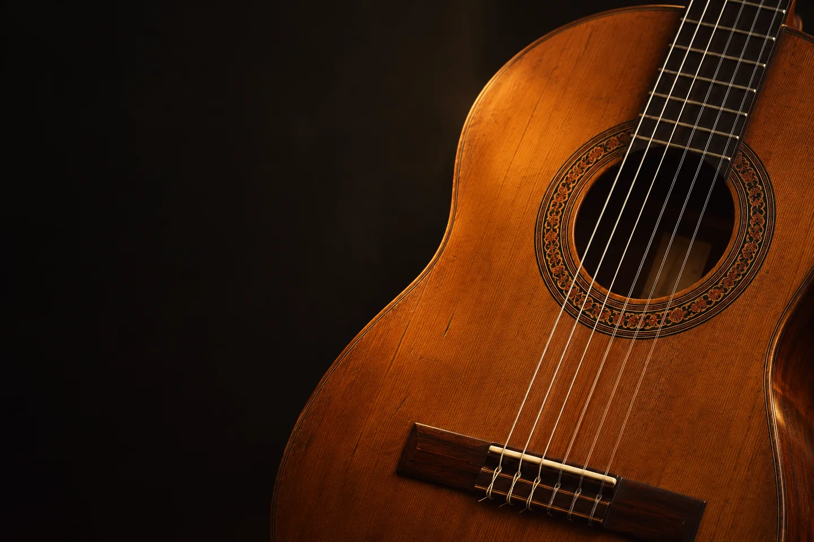

A no-nails course
Classical guitar & flamenco
Read music from your first session. Build a warm fingertip tone, learn Spanish guitar and work toward the music of Estas Tonne.
- 12 modules, six monthsFrom your first open strings to a first improvisation.
- 25 minutes a dayOr 10 when time is short. The first 28 days are planned for you.
- No accountYour progress and notes stay in this browser.
Today’s practice
- 3 min
- 5 min
- 5 min
- 7 min
- 5 min